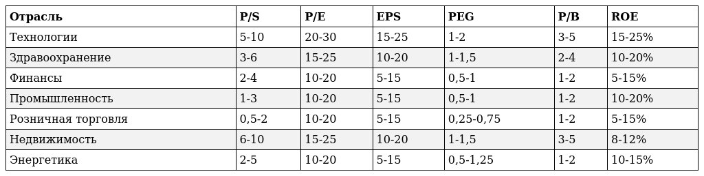

Пояснение:
Мультипликатор EPS
EPS (earnings per share) – это чистая прибыль на одну обыкновенную акцию. Измеряется, как отношение прибыли на количество акций. Для анализа используется рост EPS, то есть процентное изменение прошлого показателя к нынешнему. Если данный показатель выше прошлого периода, то это может предвещать рост акций.
Мультипликатор P/E
P/E (Price/Earnings — цена/прибыль) Капитализация/Чистую прибыль
Данный мультипликатор показывает за сколько лет окупятся инвестиции инвестора при условии, что вся чистая прибыль будет направляться на дивиденды акционерам. Также необходимо учитывать, что она меняется ежегодно. Следовательно, значения также могут корректироваться. Чем показатель меньше, тем лучше. Мультипликатор неприменим к убыточным компаниям, то есть чистая прибыль должна быть положительной.
Мультипликатор P/S
P/S (price to sales — капитализация компании / Выручка за год) это коэффициент, который показывает отношение рыночной цены компании (или рыночной стоимости ее акций) к годовой выручке.
Его используют для сравнения компаний из одной отрасли, где показатель маржинальности примерно на одном уровне.
Мультипликатор P/B
P/S (price to sales — капитализация компании / Выручка за год) — это коэффициент, который показывает отношение рыночной цены компании (или рыночной стоимости ее акций) к годовой выручке.
Его используют для сравнения компаний из одной отрасли, где показатель маржинальности примерно на одном уровне.
Мультипликатор ROE
ROE (Прибыль/Капитал * 100) — показывает отдачу на инвестиции в капитал компании или какую доходность получает компания от управления своим имуществом. Например, значение 10% означает, что компания заработала 10 копеек на 1 рубль капитала.
Мультипликатор PEG
PEG (Price Earnings Growth) — это разновидность мультипликатора P/E, в расчете которого учитываются прогнозные темпы роста прибыли.Он помогает оценить компанию с точки зрения будущих прибылей или это быстрый способ определить, насколько адекватно оценены акции по сравнению с их ростом. Рассчитывается он тремя способами: PEG = P/E / Годовой прогноз EPS = Капитализация/Чистая прибыль / Годовой прогноз EPS.
Цена по P/E
Показывает сколько готовы заплатить инвесторы за одну акцию компании.
Средние значения мультипликаторов по отрасли:
